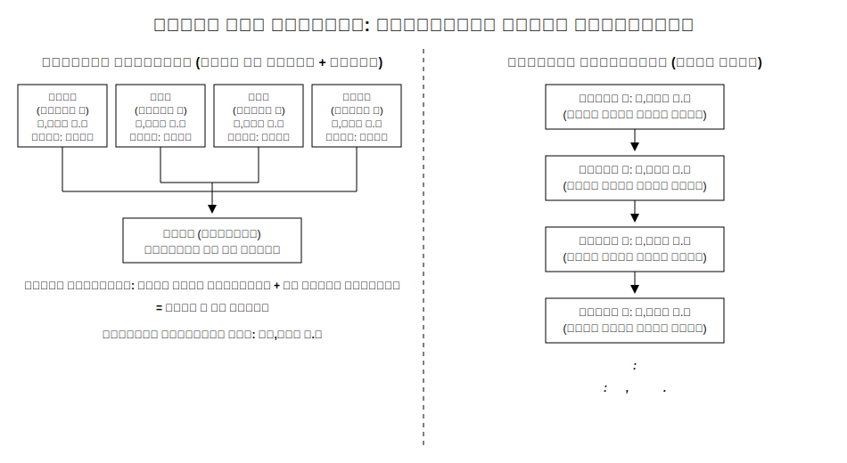
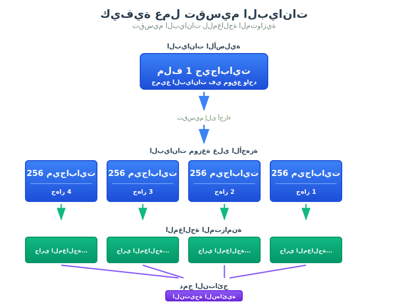
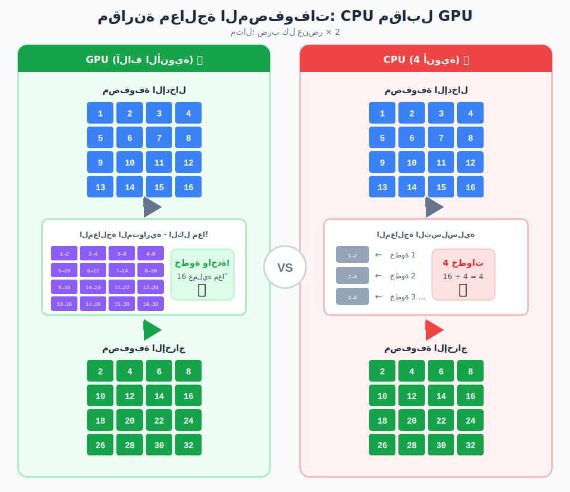
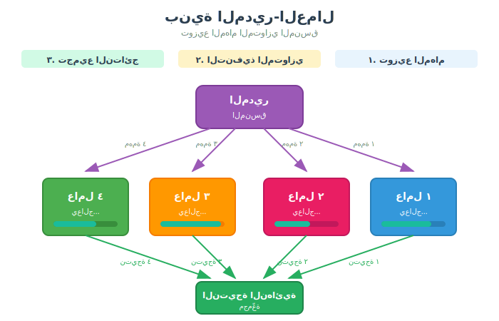

أهداف التعلم
بنهاية هذه الجلسة، سيكون الطلاب قادرين على:
- شرح أهمية المعالجة المتوازية للبيانات الضخمة والذكاء الاصطناعي
- مقارنة المعالجة التسلسلية والمتوازية باستخدام أمثلة توضيحية
- التمييز بين التوسع الرأسي والتوسع الأفقي
- فهم مبدأ موقعية البيانات
- وصف نمط بنية السيد-العامل
- ربط هذه المفاهيم بتطبيقات الذكاء الاصطناعي
📦 قصة المستودع الكبير
🔴 الطريقة التقليدية — المعالجة التسلسلية
أحمد 👨💼 يعمل بمفرده...
أحمد يبدأ من الرف الأول ➡️ الرف الثاني ➡️ ... ➡️ الرف الأخير
⏱️ الوقت المطلوب: 4 ساعات! 😫| العامل | المهمة | الوقت |
|---|---|---|
| أحمد 👨💼 | جرد كل المنتجات | 4 ساعات |
المشكلة: مستحيل! لا يمكن إنهاء العمل في يوم واحد ❌
🟢 الطريقة المتوازية — Parallel Approach
سارة 👩💼 المديرة تقرر توظيف فريق:
سارة (المديرة) 👩💼
↓ توزيع العمل
┌──────────────────┐
↓ ↓ ↓ ↓
محمد فاطمة عمر نور
👨🔧 👩🔧 👨🔧 👩🔧
قسم أ قسم ب قسم ج قسم د| العامل | المهمة | الوقت |
|---|---|---|
| محمد 👨🔧 | قسم أ (500 منتج) | ساعة واحدة |
| فاطمة 👩🔧 | قسم ب (500 منتج) | ساعة واحدة |
| عمر 👨🔧 | قسم ج (500 منتج) | ساعة واحدة |
| نور 👩🔧 | قسم د (500 منتج) | ساعة واحدة |
| سارة 👩💼 | جمع النتائج | 15 دقيقة |
💡 الدرس المستفاد
| الطريقة | العمال | الوقت | التسريع |
|---|---|---|---|
| التسلسلية | 1 | 4 ساعات | — |
| المتوازية | 4 + 1 مدير | 1.25 ساعة | ~3.2x أسرع! |
هذا بالضبط ما تفعله الحواسيب!
- 🖥️ حاسوب واحد = أحمد يعمل بمفرده
- 🖥️🖥️🖥️🖥️ أربعة حواسيب = الفريق يعمل معاً
🎯 أسئلة للتفكير:
- لماذا احتجنا إلى سارة (المديرة)؟ ما دورها؟
- ماذا لو أصيب محمد بالمرض في منتصف اليوم؟
- كيف تجمع سارة النتائج من الجميع؟
هذه الأسئلة سنجيب عليها في الجلسة!
1. لماذا المعالجة المتوازية؟
التعريف: المعالجة المتوازية (Parallel Processing) هي تنفيذ عمليات حسابية متعددة في نفس الوقت. بدلاً من تنفيذ المهام واحدة تلو الأخرى (تسلسلي)، ننفذها جميعاً في وقت واحد (متوازي).
انفجار البيانات
هل تعلم؟ 90% من جميع البيانات في العالم تم إنتاجها في العامين الأخيرين فقط!
هذا الانفجار في البيانات يخلق مشكلة جوهرية: المعالجة التقليدية على حاسوب واحد ببساطة لا تستطيع المواكبة. الحل؟ المعالجة المتوازية — استخدام حواسيب متعددة تعمل معاً!
أين تُشغّل المعالجة المتوازية عالمنا
| التطبيق | كيف تساعد المعالجة المتوازية |
|---|---|
| محركات البحث | Google تعالج مليارات الاستعلامات يومياً باستخدام MapReduce عبر آلاف الخوادم |
| تدريب الذكاء الاصطناعي | تدريب نماذج GPT يتطلب آلاف وحدات GPU تعمل بشكل متوازٍ لأشهر |
| الحوسبة السحابية | AWS و Azure و Google Cloud تشغّل ملايين المهام المتوازية على مدار الساعة |
| البحث العلمي | تسلسل الجينوم، نمذجة المناخ، ومحاكاة الفيزياء تعتمد على الحواسيب الفائقة |
الحجم الحقيقي للبيانات
| الشركة | المعالجة اليومية |
|---|---|
| 8.5 مليار عملية بحث يومياً | |
| YouTube | أكثر من 500 ساعة فيديو تُرفع كل دقيقة |
| ChatGPT | أكثر من 100 مليون مستخدم يومياً |
| Netflix | أكثر من 230 مليون مشترك (ليسوا جميعاً يشاهدون في نفس الوقت، لكن عدد كبير جداً يشاهدون في أوقات الذروة) |
المشكلة: حاسوب واحد لا يستطيع التعامل مع هذا الحجم. حتى أسرع جهاز سيكون مرهقاً.
الذكاء الاصطناعي والمعالجة المتوازية
- تدريب GPT-4 تطلب آلاف وحدات GPU تعمل معاً
- ميزات الذكاء الاصطناعي في هاتفك تستخدم المعالجة المتوازية
- التعرف على الصور، المساعدين الصوتيين — كلها تعمل بشكل متوازٍ
2. استراتيجيات التوسع
التعريف: التوسع (Scaling) هو كيفية زيادة قدرة النظام على التعامل مع المزيد من العمل. هناك نهجان أساسيان.
طريقتان للتعامل مع المزيد من العمل
| الاستراتيجية | التشبيه | المميزات | العيوب |
|---|---|---|---|
| التوسع الرأسي (Scale Up) | إضافة طوابق لمبنى واحد | بسيط، لا يحتاج تنسيق | مكلف، له حدود فيزيائية |
| التوسع الأفقي (Scale Out) | بناء المزيد من المباني | نمو غير محدود، أرخص للوحدة | يحتاج تنسيق، أكثر تعقيداً |
التوسع الرأسي (Scale Up)
Before: [Small Server: 8 GB RAM, 4 cores]
↓
After: [Big Server: 256 GB RAM, 64 cores]
Same machine, just more powerful!متى نستخدمه:
- أحمال العمل الصغيرة إلى المتوسطة
- التطبيقات البسيطة
- عندما نحتاج البساطة أكثر من الحجم
التوسع الأفقي (Scale Out)
Before: [Server 1]
↓
After: [Server 1] [Server 2] [Server 3] [Server 4] ...
More machines working together!متى نستخدمه:
- أحمال عمل البيانات الضخمة
- تدريب الذكاء الاصطناعي
- عندما نحتاج إمكانية نمو غير محدودة
الربط بالذكاء الاصطناعي
| نوع العمل | استراتيجية التوسع |
|---|---|
| نموذج ML صغير (scikit-learn) | GPU واحد قوي (توسع رأسي) |
| نموذج لغوي كبير (GPT, Claude) | آلاف وحدات GPU (توسع أفقي) |
| OpenAI, Google, Meta | توسع أفقي ضخم لتدريب الذكاء الاصطناعي |
3. تقسيم العمل: تجزئة البيانات
التعريف: تقسيم البيانات (Data Partitioning) هو عملية تجزئة مجموعة بيانات كبيرة إلى أجزاء أصغر يمكن معالجتها بشكل مستقل بواسطة أجهزة مختلفة.
مشكلة عنق الزجاجة
تشبيه: فكر في ملعب له مدخل واحد مقابل مداخل متعددة.
- باب واحد = 50,000 مشجع يدخلون من بوابة واحدة = بطيء جداً
- أبواب متعددة = المشجعون موزعون على 10 بوابات = أسرع بكثير!
نفس الأمر ينطبق على البيانات:
- قرص واحد = كل البيانات تمر عبر أنبوب واحد = عنق زجاجة
- أقراص متعددة = البيانات تمر عبر أنابيب متعددة = سريع
كيف يعمل التقسيم
مثال: المتوازي مقابل التسلسلي
السيناريو: معالجة 1 جيجابايت من البيانات

المقارنة
| المقياس | التسلسلي | المتوازي | التحسن |
|---|---|---|---|
| الأجهزة | 1 | 4 | — |
| البيانات لكل جهاز | 1 GB | 256 MB لكل جهاز | 4x أقل لكل جهاز |
| أنابيب النقل | 1 | 4 | 4x أكثر |
| الوقت | ~30 ثانية | ~5 ثواني | ~6x أسرع! |
الأفكار الأساسية
- التوازي يتضاعف: المزيد من الأجهزة = المزيد من المعالجات + المزيد من الأقراص + المزيد من عرض النطاق الترددي
- تأخير النقل مهم: نقل البيانات يستغرق وقتاً، لكن النقل المتوازي يساعد بشكل كبير
- تحول عنق الزجاجة: مع الأقراص المتوازية، وقت المعالجة يصبح العامل المحدد، وليس النقل
4. المعالج المركزي مقابل معالج الرسوميات — لماذا يحتاج الذكاء الاصطناعي للـ GPU
التعريفات:
- CPU (وحدة المعالجة المركزية): دماغ الحاسوب. أنوية قوية قليلة يمكنها القيام بمهام معقدة.
- GPU (وحدة معالجة الرسوميات): مصممة أصلاً للرسوميات، الآن تُستخدم للذكاء الاصطناعي. آلاف الأنوية البسيطة للعمل المتوازي.
تشبيه الطاهي
- CPU: طاهٍ خبير واحد يمكنه طهي أي طبق بإتقان — وصفات معقدة، أطباق إبداعية، أي شيء!
- GPU: 1,000 طاهٍ مساعد يمكن لكل منهم القيام بمهام بسيطة بسرعة — تقطيع، تقليب، قلي — لكن جميعهم يفعلون نفس المهمة!
مقارنة البنية
| الميزة | CPU | GPU |
|---|---|---|
| الأنوية | 4-64 نواة قوية | آلاف الأنوية البسيطة |
| الذاكرة المؤقتة | كبيرة (ذاكرة سريعة) | صغيرة |
| منطق التحكم | معقد (يمكنه فعل أي شيء) | بسيط (متخصص) |
| الأفضل لـ | مهام معقدة ومتنوعة | نفس العملية على بيانات كثيرة |
لماذا GPU للذكاء الاصطناعي؟
مثال معالجة المصفوفات بشكل متوازٍ
المشكلة: ضرب كل عنصر في مصفوفة كبيرة × 2
🔴 طريقة CPU (تسلسلي)
CPU (4 cores) processes elements ONE BY ONE (or 4 at a time):
Step 1: Process element [0,0] → 1 × 2 = 2
Step 2: Process element [0,1] → 2 × 2 = 4
Step 3: Process element [0,2] → 3 × 2 = 6
...
Step 1,000,000: Process element [999,999]
⏱️ Total: 1,000,000 operations ÷ 4 cores = 250,000 steps🟢 طريقة GPU (متوازي)
GPU (1000 cores) processes MANY elements AT ONCE:
Core 1 Core 2 Core 3 ... Core 1000
↓ ↓ ↓ ↓
[0,0] [0,1] [0,2] ... [0,999]
1 × 2 2 × 2 3 × 2 ... 1000 × 2
↓ ↓ ↓ ↓
2 4 6 ... 2000
⏱️ Total: 1,000,000 elements ÷ 1000 cores = 1,000 steps!🎯 الفكرة الأساسية
| الطريقة | الأنوية | الخطوات لـ 1M عنصر | السرعة |
|---|---|---|---|
| CPU | 4 | 250,000 خطوة | بطيء |
| GPU | 1000 | 1,000 خطوة | 250x أسرع! |
5. بنية السيد والعمال (Master-Worker)
التعريف: نمط السيد-العامل (Master-Worker) هو بنية حوسبة موزعة حيث تنسق عقدة واحدة (السيد) العمل بين عقد متعددة (العمال). العمال يقومون بالحساب الفعلي؛ السيد يدير ويجمع النتائج.

تشبيه المدير
تذكر سارة من قصة المستودع؟
- سارة (السيد/Master): توزع العمل، تتابع التقدم، تجمع النتائج
- محمد، فاطمة، عمر، نور (العمال/Workers): ينفذون العد الفعلي
مسؤوليات السيد
- التقسيم: تجزئة البيانات إلى أجزاء
- التوزيع: إرسال الأجزاء للعمال
- المتابعة: مراقبة من يفعل ماذا
- الجمع: استلام النتائج من العمال
- الدمج: جمع كل النتائج في المخرج النهائي
مخطط البنية
النقطة الأساسية: العمال لا يتحدثون مع بعضهم — فقط مع السيد (المدير)!
الربط بالذكاء الاصطناعي
| المفهوم | في التدريب الموزع |
|---|---|
| السيد (Master) | خادم المعاملات (Parameter Server) |
| العمال (Workers) | عقد GPU تتدرب على أجزاء البيانات |
| النتائج | التدرجات (Gradients) - كيفية تحديث النموذج |
| الدمج | مزامنة التدرجات |
مثال من الواقع: خط أنابيب تحليل الفيديو
إليك كيف يعمل نمط المدير-العمال في نظام تحليل فيديو بالذكاء الاصطناعي الحقيقي. المدير يوزع ملفات الفيديو على العمال، وكل عامل يعالج الفيديو الخاص به عبر خط أنابيب كامل من وظائف الذكاء الاصطناعي:
كل حرف يمثل وظيفة معالجة:
- A: تحميل ملف الفيديو الخام
- B, D, F, H: فرع الصوت (استخراج الصوت ← فصل المتحدثين ← النسخ ← تلخيص الآراء)
- C, E, G, I: فرع المرئي (استخراج الإطارات ← اكتشاف الأشخاص ← وصف الأشخاص ← جمع المعلومات المرئية)
- J: دمج نتائج الصوت والمرئي باستخدام الطوابع الزمنية
- K: حفظ التقرير النهائي متعدد الوسائط
6. موقعية البيانات — القاعدة الذهبية
التعريف: موقعية البيانات (Data Locality) هي المبدأ الذي ينص على أن الحساب يجب أن يحدث أقرب ما يمكن إلى البيانات. نقل البيانات مكلف؛ نقل الحساب رخيص.
تسلسل السرعة
| الموقع | السرعة | التشبيه |
|---|---|---|
| الذاكرة (RAM) | فورية | القراءة من مكتبك |
| القرص المحلي | سريعة | المشي إلى رف الكتب |
| الشبكة (نفس المبنى) | بطيئة | انتظار تسليم البريد |
| الإنترنت (دولة أخرى) | بطيئة جداً | الشحن الدولي |
تشبيه المكتبة
تخيل أنك تحتاج لقراءة كتاب من 1000 صفحة:
- طريقة سيئة: تصوير الكتاب كاملاً وحمله للبيت = نقل البيانات للحساب
- طريقة جيدة: الذهاب للمكتبة وقراءته هناك = نقل الحساب للبيانات
في الأنظمة الموزعة، إرسال "البرنامج" الصغير إلى مكان "البيانات" الكبيرة أسرع بكثير من نقل مجموعات البيانات الضخمة عبر الشبكة!
الربط بالذكاء الاصطناعي
- لماذا مراكز البيانات مهمة لتدريب الذكاء الاصطناعي: البيانات ووحدات GPU يجب أن تكون قريبة من بعضها
- لماذا تبني الشركات GPUs قرب التخزين: تقليل وقت نقل البيانات
- مناطق السحابة: اختر المنطقة الأقرب لبياناتك
7. عندما تسوء الأمور — التسامح مع الأخطاء
التعريف: التسامح مع الأخطاء (Fault Tolerance) هو قدرة النظام على الاستمرار في العمل بشكل صحيح في حالة فشل بعض مكوناته.
الواقع
في نظام يحتوي على 1,000 جهاز، شيء ما سيفشل.
- الأقراص الصلبة تتلف
- الشبكات تنقطع
- الكهرباء تنقطع
- البرامج تتعطل
السؤال: كيف نستمر في العمل رغم الفشل؟
الاكتشاف — كيف نعرف أن شيئاً فشل؟
Every few seconds, Master asks each Worker:
Master: "Worker 1, are you alive?"
Worker 1: "Yes, still working!"
Master: "Worker 2, are you alive?"
Worker 2: "Yes, still working!"
Master: "Worker 3, are you alive?"
Worker 3: ... (no response)
Master: "Worker 3 failed! Reassigning its task..."الاستعادة — ماذا يحدث بعد ذلك؟
- مهمة العامل الفاشل ← تُسند لعامل آخر
- البيانات على الجهاز الفاشل ← تُستعاد من نسخة احتياطية
- المبدأ الأساسي: التصميم يفترض أن الفشل سيحدث
نقطة للنقاش: "Netflix لديها آلاف الخوادم. كيف تبقى متصلة 24/7؟"
الجواب: صمموا نظامهم بالكامل على افتراض أن الفشل يحدث باستمرار. عندما يموت خادم واحد، تتحول حركة المرور فوراً إلى آخرين. بل إنهم يتسببون عمداً في فشل (Chaos Monkey) لاختبار مرونتهم!
الملخص
المفاهيم الأساسية المغطاة
| المفهوم | النقطة الرئيسية | مثال من الواقع |
|---|---|---|
| المعالجة المتوازية | تقسيم العمل بين عمال كثيرين | فريق سارة مقابل أحمد يعمل بمفرده |
| تقسيم البيانات | توزيع البيانات على الأجهزة | تقسيم 1 جيجابايت إلى 4 قطع بحجم 256 ميجابايت |
| التوسع الرأسي مقابل الأفقي | جهاز أكبر مقابل أجهزة أكثر | ناطحة سحاب (رأسي) مقابل حرم جامعي (أفقي) |
| CPU مقابل GPU | أنوية قوية قليلة مقابل أنوية بسيطة كثيرة | طاهٍ خبير مقابل عمال خط تجميع |
| السيد-العامل | منسق واحد، منفذون كثيرون | مدير يوزع المهام على أعضاء الفريق |
| موقعية البيانات | انقل الحساب للبيانات، لا العكس | معالجة البيانات حيث تُخزن لتجنب تأخيرات النقل |
| التسامح مع الأخطاء | صمم للفشل، استعد برشاقة | إعادة إسناد مهمة العامل الفاشل لجهاز آخر |
الخلاصات الرئيسية
معجم المصطلحات الأساسية
| الإنجليزية | العربية | التعريف |
|---|---|---|
| Parallel Processing | المعالجة المتوازية | تنفيذ عمليات حسابية متعددة في وقت واحد |
| Sequential Processing | المعالجة التسلسلية | تنفيذ العمليات واحدة تلو الأخرى |
| Data Partitioning | تقسيم البيانات | تجزئة البيانات إلى أجزاء للتوزيع |
| Vertical Scaling | التوسع الرأسي | جعل جهاز واحد أقوى |
| Horizontal Scaling | التوسع الأفقي | إضافة المزيد من الأجهزة |
| Master Node | العقدة الرئيسية | المنسق في النظام الموزع |
| Worker Node | عقدة العامل | جهاز ينفذ المهام |
| Data Locality | موقعية البيانات | إبقاء الحساب قريباً من البيانات |
| Fault Tolerance | التسامح مع الأخطاء | القدرة على الاستمرار رغم الفشل |
| GPU | وحدة معالجة الرسوميات | معالج محسّن للرياضيات المتوازية |
| Bottleneck | عنق الزجاجة | نقطة تحد من الأداء الكلي |
الربط بالجلسة الثانية
تحدثنا عن كيفية معالجة البيانات عبر أجهزة كثيرة — قد تكون في دول مختلفة، تديرها شركات مختلفة. لكن ماذا يحدث لبياناتك أنت عندما تنتشر عبر أنظمة لا تتحكم فيها؟
في الجلسة القادمة، سنستكشف سؤالاً حاسماً: كم يمكن معرفته عنك من البيانات "المجهولة"؟